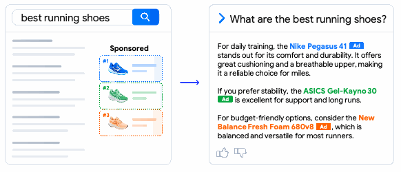
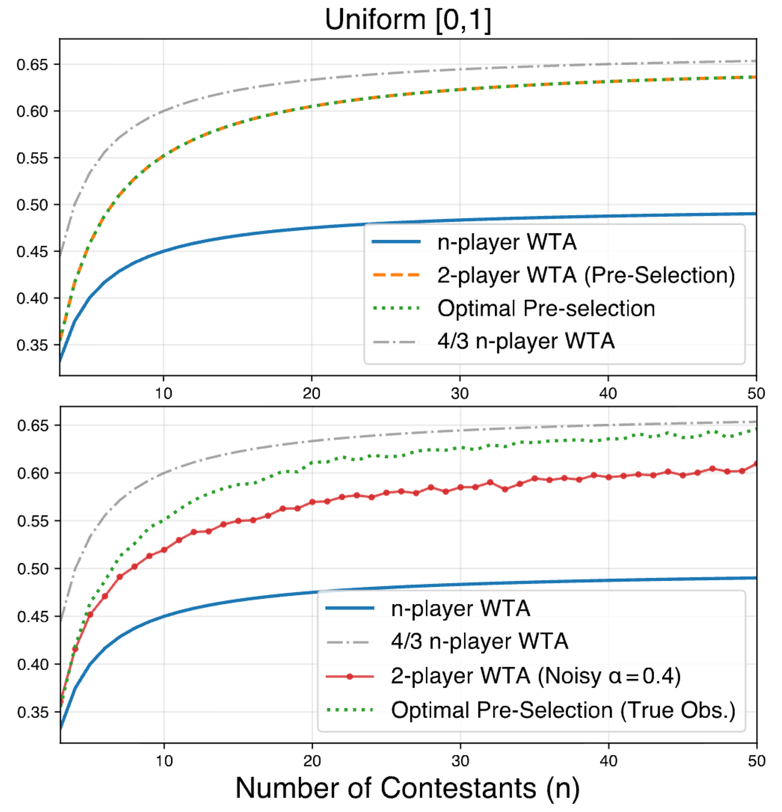
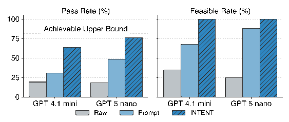
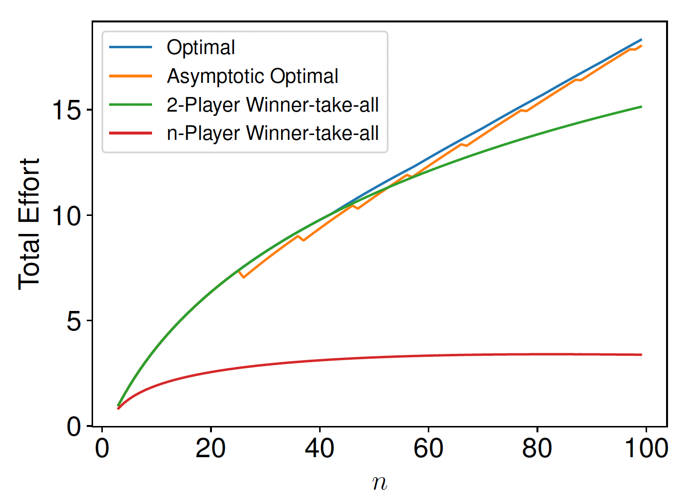
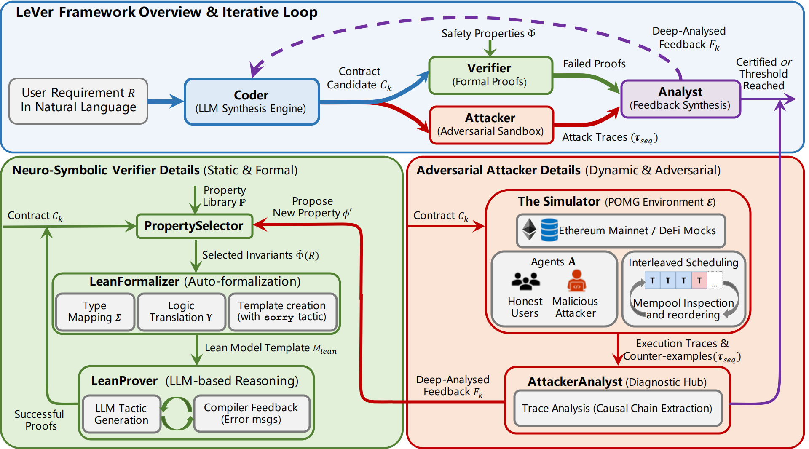
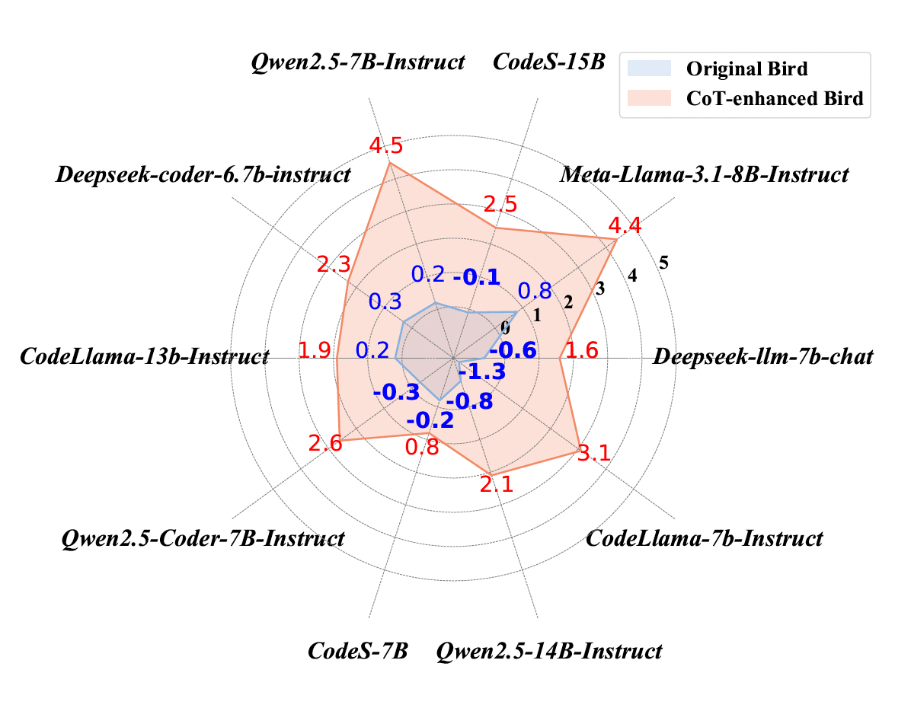
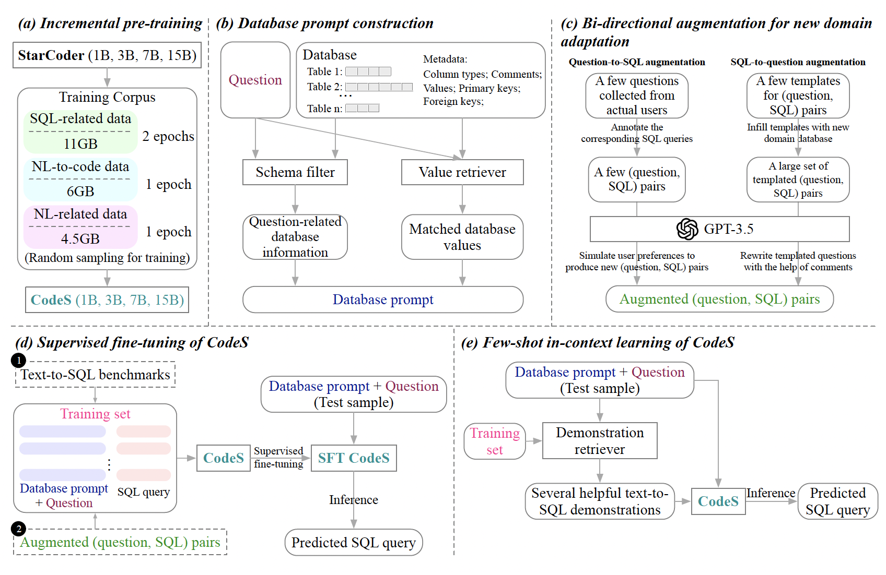
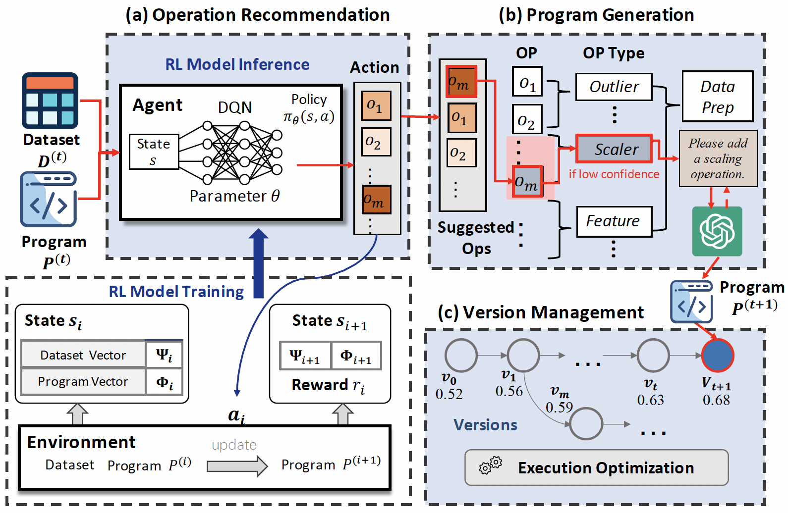

Research
Featured Preprints
|

Token-Level Advertising
Hanbing Liu, Bowei Zhang, Changyuan Yu, Yinyu Ye, Qi Qi†
Incentive-Based AI Alignment Workshop @ EC, 2026
arXiv / Poster / Slides ( EN/ CN) / Media Coverage ( 机器之心)
Where do commercial opportunities arise in the age of generative search?
We propose a token-level auction that integrates advertiser influence into language generation through a latent mixture of advertiser policies.


Selected Publications




CodeS: Towards Building Open-source Language Models for Text-to-SQL
Haoyang Li, Jing Zhang†, Hanbing Liu, Ju Fan, Xiaokang Zhang, Jun Zhu, Renjie Wei, Hongyan Pan, Cuiping Li, Hong Chen
SIGMOD, 2024
🏆 Most Influential Papers in SIGMOD'24 (1/213) [Paper Digest]
arXiv
/
Github
/
Hugging Face
The first open-source Text-to-SQL large language model and automatic domain adaptation pipeline, achieving SOTA performance.

α-β: Alphabetical Order, *: Equal Contribution, †: Corresponding Author
|
Graduate Academic Excellence Scholarship, First Class, 2025, 2026
Graduate Entrance Scholarship, First Class (1st Place), 2024
Outstanding Graduate of Beijing, 2024
Outstanding Graduate of Renmin University of China, 2024
Industrial and Commercial Bank of China (ICBC) Scholarship, 2024
Huawei Scholarship, 2022,2023
Academic Excellence Scholarship, First Class (Top 3% GPA), 2022
Renmin University of China Programming Contest, Gold Medal (2nd Place), 2020
National Olympiad in Informatics in Provinces (NOIP), First Prize, 2018
|
|
Conference Organizer IJTCS-FAW'26
PC Member WWW'27, ICLR'27, AAAI'27, NeurIPS'26, EC'26, ICML'26 (Gold Reviewer), TMLR
Conference (Sub-)Reviewer KDD'24-27, WINE'24-26, ARR'26, AAMAS'26, ICLR'26, COCOON'25, IJTCS-FAW'25, EC'25
Workshop Reviewer EconML @ NeurIPS'26, LASS @ CIKM'26, AIMS @ ICLR'26
Mentoring
Xuanzhen Zhu, UG, RUC (25– )
Ziyuan Wang, UG, RUC (25– )
Jincheng Feng, UG, RUC (22–24 → RUC Master)
Ruotong Chen, UG, RUC (22–25 → RUC PhD)
Yuanyuan Zhong, UG, RUC (21–25 → PKU Master)
|
Great thanks to Jon Barron for the original design and implementation of this website.
Last update: Sep 21, 2026
|
|